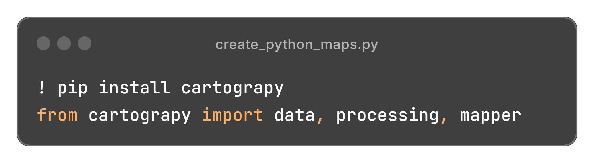

Créer des cartes en Python,
sans se battre avec Matplotlib.
cartograpy réunit téléchargement de données géographiques, traitement
vecteur/raster et cartographie statique & interactive dans une seule API pour créer
des cartes soignées en seulement quelques lignes de code.

65 méthodes sur Map · cartes statiques & interactives · pip install cartograpy